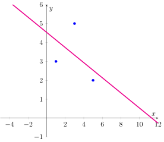
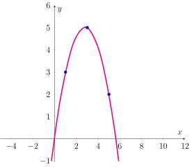
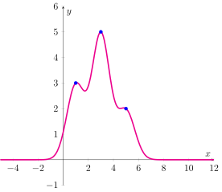
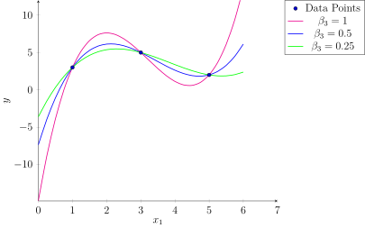

Exercises
Exercises#
Imagine you have a dataset which consists of three datapoints (of course this is super unrealistic but if we want to go through regression step by step, then we need a really small example). The data is listed in the following table:
\(D\)
\(x\)
\(y\)
1
5
2
2
3
5
3
1
3
In this exercise, you are asked to fit a regression function for specified function classes. That is, you will have to create the design matrix and compute the global optimizer(s) \(\beta\) of the regression objective. You can and probably should use Python to solve the system of linear equations to get \(\beta\), but it’s a good exercise to compute the design matrix by hand. Plot the regression function.
Fit an affine function to the data
\[\begin{align*} f(x) = \beta_1 x + \beta_0.\end{align*}\]Affine functions are decomposed into an inner product of a basis function and the regression parameter vector \(\bm\beta\) by
\[\begin{align*} f(x)=\beta_1 x + \beta_0 =\phi_{aff}(x)^\top \bm\beta, \end{align*}\]where the feature transformation is defined as
\[\begin{split}\phi_{aff}(x)=\begin{pmatrix}1\\x\end{pmatrix}.\end{split}\]The design matrix is given by
\[\begin{align*} X = \begin{pmatrix} - & \phi_{aff}(5)^\top & -\\- & \phi_{aff}(3)^\top & -\\ - & \phi_{aff}(1)^\top & - \end{pmatrix} = \begin{pmatrix} 1 & 5\\ 1 & 3\\ 1 & 1 \end{pmatrix}. \end{align*}\]We have seen in the lecture videos, that the global minimizer(s) \(\beta\) which minimize the residual sum of squares are given by the solver(s) of the following system of linear equations:
(28)#\[\{\bm\beta\mid X^\top X\bm\beta = X^\top y\}.\]The minimizer \(\beta\) is uniquely defined if \(X^\top X\) is invertible. This is here the case.
You can either compute the inverse \((X^\top X)^{-1}\) (via Python or manually) and compute the regression vector \(\beta\) by the formula
(29)#\[\bm\beta = (X^\top X)^{-1}X^\top y,\]or you solve the system of linear equations defined in Eq. (28). We have
\[\begin{split} X^\top X = \begin{pmatrix} 3 & 9\\ 9 & 35 \end{pmatrix},\quad X^\top y = \begin{pmatrix} 10\\28 \end{pmatrix}.\end{split}\]Hence, we have to solve the following system of linear equations according to Eq. (28):\[\begin{align*} 3\beta_0 + 9\beta_1 &= 10\\ 9\beta_0 + 35\beta_1 &=28. \end{align*}\]No matter which way you choose, the result should be
\[\begin{split} \bm\beta \approx \begin{pmatrix} 4.08\\ -0.25 \end{pmatrix}.\end{split}\]Hence, the affine regression function is defined as\[f(x) = -0.25x + 4.08.\]
Fit a polynomial regression function of degree \(k=2\) to the data
\[\begin{align*} f(x) = \beta_2 x^2 + \beta_1x + \beta_0. \end{align*}\]The feature transformation for a polynomial of degree 2 is here defined as
\[\begin{split}\phi_{p2}(x)=\begin{pmatrix} 1\\x \\\ x^2 \end{pmatrix}.\end{split}\]The design matrix is given by\[\begin{align*} X = \begin{pmatrix} - & \phi_{p2}(5)^\top & -\\ - & \phi_{p2}(3)^\top & -\\ - & \phi_{p2}(1)^\top & - \end{pmatrix} = \begin{pmatrix} 1 & 5 & 25\\ 1 & 3 & 9\\ 1 & 1 & 1 \end{pmatrix}. \end{align*}\]We calculate the matrices
\[\begin{split}X^\top X = \begin{pmatrix} 3 & 9 & 35\\ 9 & 35& 153\\ 35 & 153 & 707 \end{pmatrix},\quad X^\top y = \begin{pmatrix} 10\\28\\98 \end{pmatrix},\end{split}\]and solve the system of linear equation in Eq. (28) or compute the inverse of \(X^\top X\) and compute \(\beta\) by Eq. (29). As a result we get\[\begin{split}\bm\beta \approx \begin{pmatrix} 0.125\\ 3.5\\-0.625 \end{pmatrix}.\end{split}\]Hence, the polynomial regression function is\[f(x)= -0.625x^2 +3.5x +0.125.\]
Fit a sum of three Gaussians to the data:
\[\begin{align*} f(x)= \beta_1\exp(-(x-5)^2)+\beta_2\exp(-(x-3)^2)+\beta_3\exp(-(x-1)^2). \end{align*}\]The mean values \(\mu\), which have to be specified when we choose a Gaussian basis function, are here equal to the three given feature values in the data. This strategy is also often used in practice.
The feature transformation when using Gaussian basis functions as stated above is given by
\[\begin{split}\phi_{G3}(x)=\begin{pmatrix} \exp(-(x-5)^2)\\\exp(-(x-3)^2) \\\ \exp(-(x-1)^2) \end{pmatrix}.\end{split}\]The design matrix is defined as\[\begin{align*} X = \begin{pmatrix} - & \phi_{G3}(5)^\top & -\\ - & \phi_{G3}(3)^\top & -\\ - & \phi_{G3}(1)^\top & - \end{pmatrix} = \begin{pmatrix} 1 & \exp(-4) &\exp(-16)\\ \exp(-4) & 1 & \exp(-4)\\ \exp(-16) & \exp(-4) & 1 \end{pmatrix}. \end{align*}\]As in previous exercises, we compute the regression parameter vector. As a result we get
\[\begin{split}\bm\beta \approx \begin{pmatrix} 1.91\\ 4.91\\2.91 \end{pmatrix}.\end{split}\]Hence, the polynomial regression function is\[f(x)= 1.91\exp(-(x-5)^2)+4.91\exp(-(x-3)^2)+2.91\exp(-(x-1)^2).\]
Fit a polynomial of degree \(k=3\):
\[f(x) = \beta_0 +\beta_1 x+ \beta_2x^2 + \beta_3x^3.\]Note that this results in an underdetermined system, you will hence get a set of regression solvers.The feature transformation for a polynomial of degree 3 is defined as
\[\begin{split}\phi_{p3}(x)=\begin{pmatrix} 1\\x \\\ x^2 \\ x^3 \end{pmatrix}.\end{split}\]The design matrix is given by\[\begin{align*} X = \begin{pmatrix} - & \phi_{p3}(5)^\top & -\\ - & \phi_{p3}(3)^\top & -\\ - & \phi_{p3}(1)^\top & - \end{pmatrix} = \begin{pmatrix} 1 & 5 & 25 & 125\\ 1 & 3 & 9 & 27\\ 1 & 1 & 1 & 1 \end{pmatrix}. \end{align*}\]We have to solve the system of equations given by \(X^\top X \bm\beta = X^\top \vvec{y}\):
\[\begin{align*} \begin{pmatrix} 3 & 9 & 35 & 153\\ 9 & 35 & 153 & 707\\ 35& 153 & 707 & 3369\\ 153& 707 & 3369 & 16355 \end{pmatrix} \bm\beta = \begin{pmatrix} 10\\ 28\\ 98\\ 388 \end{pmatrix} \end{align*}\]We can solve this system of equations by hand. There are multiple ways to do this. One is to transform the equations above into an upper triangle form. To do this, we divide the first equation by three and subtract the first equation, multiplied accordingly, from the other equations such that the first coefficient is equal to zero.
\[\begin{align*} \begin{pmatrix} 1 & 3 & 11.67 & 51\\ 0 & 8 & 48 & 248\\ 0 & 48 & 298.67& 1584\\ 0 & 248 & 1584 & 8552 \end{pmatrix}\bm\beta = \begin{pmatrix} 3.33\\-2\\-18.67\\-122 \end{pmatrix} \end{align*}\]Now we do the same with the second equation, we divide by eight and subtract the second equation from the ones below, multiplied accordingly.
\[\begin{align*} \begin{pmatrix} 1 & 3 & 11.67 & 51\\ 0 & 1 & 6 & 31\\ 0 & 0 & 10.67 & 96\\ 0 & 0 & 96 & 864 \end{pmatrix}\bm\beta = \begin{pmatrix} 3.33\\ -0.25\\ -6.67\\ -60 \end{pmatrix} \end{align*}\]Now we do the same with the third equation and we get
\[\begin{align*} \begin{pmatrix} 1 & 3 & 11.67 & 51\\ 0 & 1 & 6 & 31\\ 0 & 0 & 1 & 9\\ 0 & 0 & 0 & 0 \end{pmatrix}\bm\beta = \begin{pmatrix} 3.33\\ -0.25\\ -\frac{5}{8}\\ 0 \end{pmatrix} \end{align*}\]We observe that the last equation is always true. We can now solve this system in dependence of \(\beta_3\). The last equation states that
\[\beta_2 + 9\beta_3 = -\frac{5}{8} \Leftrightarrow \beta_2 = -\frac{5}{8} -9\beta_3.\]Substituting \(\beta_2\) into the second equation yields \(\beta_1 = 3.5 +23\beta_3 \) and substituting \(\beta_1\) and \(\beta_2\) into the first equation yields \(\beta_0 = \frac{1}{8}-15\beta_3\). Hence, the set of all regression solvers is given by\[\begin{split}\left\{\beta = \begin{pmatrix}\frac{1}{8}-15\beta_3\\3.5 +23\beta_3\\-\frac{5}{8} -9\beta_3\\\beta_3 \end{pmatrix} \mid \beta_3\in\mathbb{R} \right\}\end{split}\]The plot below indicates the regression models for three values of \(\beta_3\).